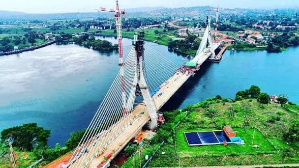
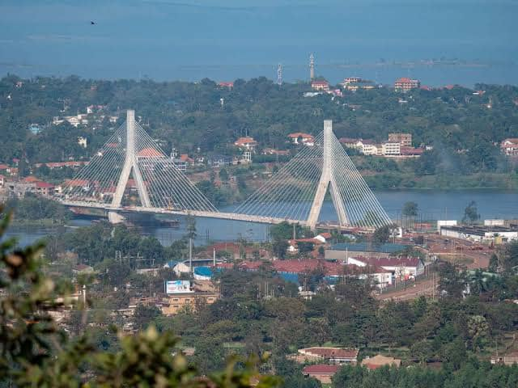
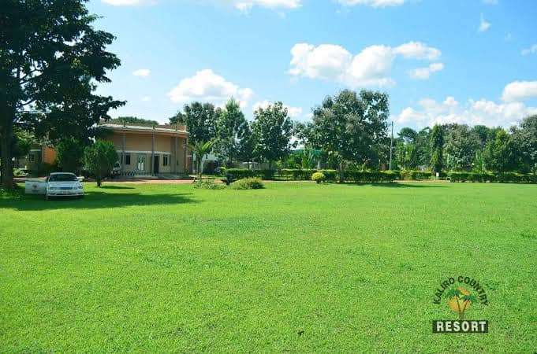
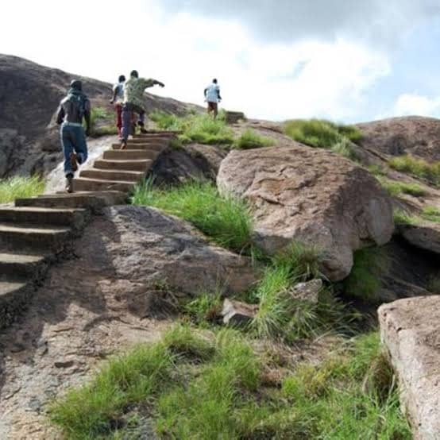
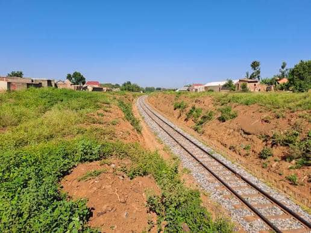
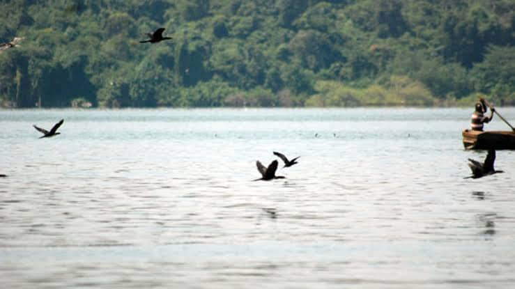
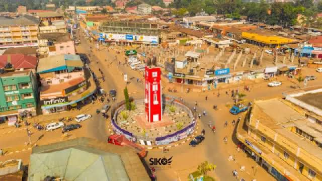

Busoga Districts
BRPV coordinates volunteers and activities across the districts that make up the Busoga region.

Jinja
A central district of the Busoga region.

Jinja City
The main urban centre of the Busoga region.
Kamuli
A district in the northern part of the Busoga region.

Kaliro
A district in the northern part of the Busoga region.

Buyende
A district in the northern part of the Busoga region.

Iganga
A district in the southern part of the Busoga region.

Mayuge
A district in the southern part of the Busoga region.

Bugiri
A district in the southern part of the Busoga region.

Namayingo
A district in the eastern part of the Busoga region.

Busiki (Namutumba)
A district in the eastern part of the Busoga region.
Kaliro-adjacent (Bugabula)
Part of the Busoga region.

Luuka
A district in the central part of the Busoga region.